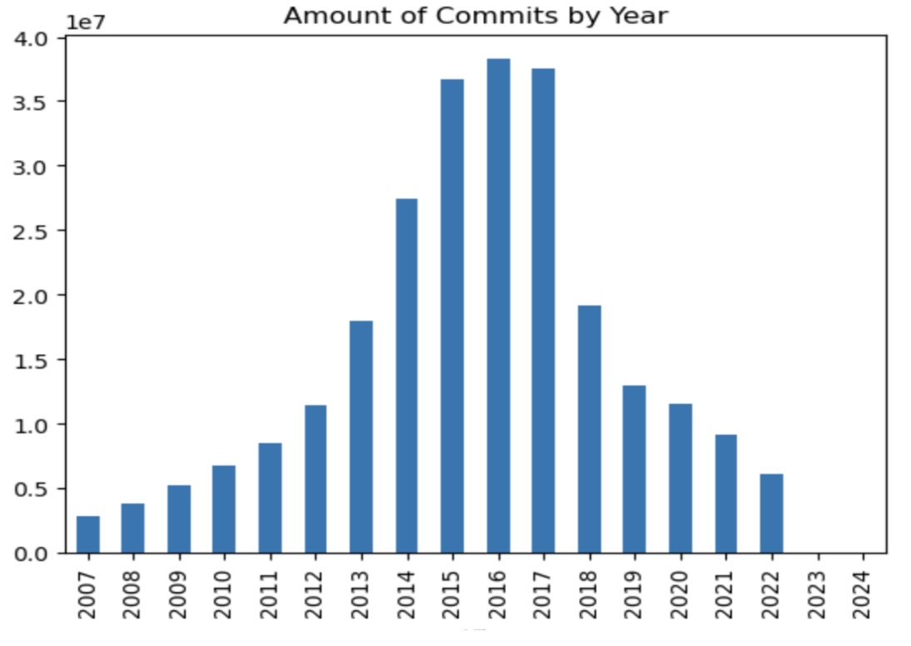

Project Goals:
Analyze the content of all public Github repositories overtime to learn about trends in programming. This project utilizes techniques in natural language processing, spark, and cloud computing.
Dataset:
All Repositories publicly published on Guthub between 2008-2022
Modeling Approach:
- Data Processing: Commit messages and content were cleaned, tokenized, then vecorized for ease of NLP
- Similarity Analysis: I used Minhash with Jaccard similarity (MinHashLSH) to analyze the similarity of commit messages and content
- Analysis of Commits over time: Once commits were determined to be duplicates or relatively unique, I compared uniqueness year over year and by coding language
Key Findings:
- Usage of GitHub peaked in 2018 with a steep decline in usage after the 2018 GitHub acquisition by Microsoft
- There has been a significant rise in usage of open source and cloud technology since the advent of GitHub
- There is evidence for a decline in frequently repeated commits, with very similar commit messages, showing that AI may be able to assist in reducing the amount of bug fixes necessary in coding projects
Code Highlights:
import pandas as pd
import numpy as np
from itertools import compress
from pyspark.sql.functions import *
from pyspark.sql.types import *
import seaborn as sns
import matplotlib.pyplot as plt
import re
from pyspark.ml.feature import MinHashLSH
from pyspark.ml.feature import CountVectorizer, IDF, CountVectorizerModel, Tokenizer, RegexTokenizer, StopWordsRemover
from pyspark.ml.feature import StopWordsRemover # PySpark currently does not directly support automatic stop word lists for languages other than English
from pyspark import SparkContext
from pyspark.sql import SQLContext
from pyspark.sql import Row
import pyspark.sql.functions as F
from google.cloud import storage
import time
from pyspark.ml.linalg import Vectors
Configure Spark Environment
sc.stop()
sleep_time = 60
time.sleep(sleep_time)
conf = pyspark.SparkConf().setAll([
('spark.driver.maxResultSize', '10g'), \
('spark.driver.memory','20g'), \
('spark.num.executors', '64'), \
('spark.cores.max','48'), \
('spark.executor.memory', '11G'), \
('spark.serializer', 'org.apache.spark.serializer.KryoSerializer'), \
('spark.kryoserializer.buffer.max', '800m'), \
('spark.driver.cores', '7'), \
('spark.sql.broadcastTimeout', '800'),\
('spark.executor.memoryOverhead', '800')
])
sc = pyspark.SparkContext(conf=conf)
# Starting Spark session with configs applied
spark = SparkSession(sc).builder.getOrCreate()
Data Preparation
raw_df = spark.read.parquet('gs://msca-bdp-students-bucket/notebooks/lilycampbell/df_com_lng_2206/')
clean_df = sampled_df.na.drop(how="any")
df = clean_df.withColumn("id", monotonically_increasing_id())
df_text = df.select('id', 'message')
# Split text into words
# Remove punctuation and split into words
df_text = df_text.withColumn("clean_text", F.regexp_replace(F.col("message"), "[^a-zA-Z0-9\\s]", ""))
df_text = df_text.withColumn("words1", F.regexp_replace(F.regexp_replace("clean_text", "[^\x00-\x7F]+", ""), '""', ''))
df_text = df_text.withColumn("words2", regexp_replace("words1", '\n\n', ''))
df_text = df_text.withColumn("words3", regexp_replace("words2", '\n', ''))
df_text = df_text.withColumn("words4", regexp_replace("words3", '\n', ''))
df_text = df_text.withColumn("words", split(F.col("words4"), " "))
# Filter out tokens that are less than 3 characters
df_text = df_text.withColumn("clean_words", F.expr("filter(words, word -> length(word) >= 3)"))
# Remove stopwords
remover = StopWordsRemover(inputCol="clean_words", outputCol="filtered_words")
df_text = remover.transform(df_text)
display(df_text.select('id',
'message',
'clean_text',
'words',
'clean_words',
'filtered_words').limit(5).toPandas())
Vectorize tokens
#vectorize
vectorize = CountVectorizer(inputCol="filtered_words", outputCol="features", minDF=1.0)
df_vectorize1 = vectorize.fit(df_text).transform(df_text)
df_vectorize1 = df_vectorize1.filter(non_zero_vector_udf(df_vectorize1["features"]))
display(df_vectorize1.limit(5).toPandas())
Similarity Analysis
mh = MinHashLSH(inputCol="features", outputCol="hashes", numHashTables=5)
model = mh.fit(df_vectorize)
df_hashed_text = mh.fit(df_vectorize).transform(df_vectorize).cache()
jaccard_distance = 0.3
df_dups_text = model.approxSimilarityJoin(df_hashed_text, df_hashed_text, jaccard_distance).filter("datasetA.id < datasetB.id").select(
col("distCol"),
col("datasetA.id").alias("id_A"),
col("datasetB.id").alias("id_B"),
col('datasetA.message').alias('text_A'),
col('datasetB.message').alias('text_B'))
records = df_hashed_text.count()
dups = df_dups_text.select('id_A').distinct().count()
uniques = records - dups